10
Vepra Korale
7
Muzik dhome dhe solistikë
5
Libra
Mirënjohjet

Shpërblim i dhënë nga Kuvendi i Komunës Prishtinë për përpjekje të jashtëzakonshme dhe rezultate të arritura në lëmin e muzikës
Nëntor 1971
Shpërblim i dhënë nga Kuvendi i Komunës Prishtinë për përpjekje të jashtëzakonshme dhe rezultate të arritura në lëmin e muzikës
Nëntor 1971
Shpërblim i dhënë nga Kuvendi i Komunës Prishtinë për përpjekje të jashtëzakonshme dhe rezultate të arritura në lëmin e muzikës
Nëntor 1971